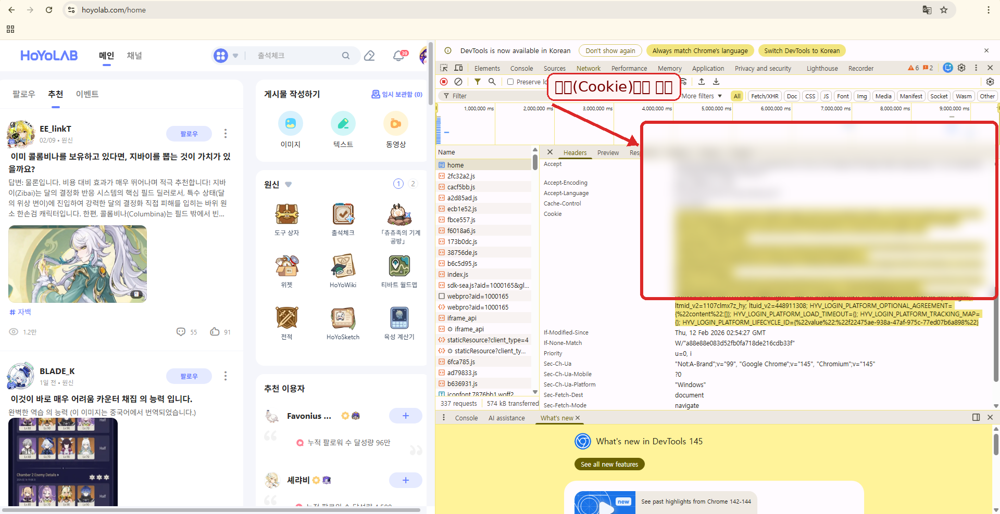

📌 가이드
자백봇 원신 쿠키 등록 방법 (HoYoLAB)
작성: 2026-02-22 22:30 (KST) · 대상: 크롬/엣지 사용자
01준비물
- HoYoLAB(호요랩) 로그인이 되어 있어야 합니다.
- 크롬 또는 엣지(Chromium 기반 브라우저)
- 자백봇을 사용할 수 있는 디스코드 서버
02개발자 도구 열기
- F12 또는 Ctrl + Shift + I
- 상단에서 Network 탭을 클릭
- 페이지를 한 번 새로고침(F5)
F12
Network 탭
F5 (새로고침)
03Cookie 값 복사하기 (핵심)
Network 목록에서 home 같은 요청을 클릭한 뒤, 오른쪽에서 아래 순서로 이동합니다.
- Headers 탭
- Request Headers 섹션
- Cookie: 줄을 찾아서 전체를 복사

복사할 때 포인트
- 쿠키 값(긴 문자열)은 그대로 복사하되, 어디에 공개하지 마세요.
- ltuid_v2, ltoken_v2, cookie_token_v2가 포함되어 있으면 보통 정상입니다.
04디스코드 봇에 등록
디스코드에서 /자백 → 원신 → 쿠키 등록을 눌러, 방금 복사한 문자열을 그대로 붙여넣으면 됩니다.
🔒 쿠키는 로그인 세션입니다. 유출되면 계정이 위험할 수 있어요.
05자주 묻는 문제
- 검증 실패: 쿠키가 만료됐거나, Cookie 줄을 일부만 복사했을 가능성이 큽니다. 다시 로그인 후 재시도하세요.
- 자동 출석이 안 됨: cookie_token_v2가 누락된 경우가 많습니다. Cookie 줄에 포함되어 있는지 확인하세요.